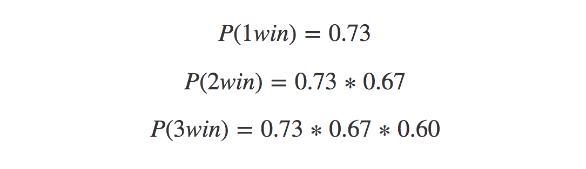

Imagine it’s January 1st, 2015 and the New England Patriots made the playoffs yet again 😢. You run a Tom Brady Super Fan website and want to ensure you have enough servers to accommodate traffic to your website during the playoffs. Historically, site traffic during January and February increases when the Patriots win playoff games, so you want a forecast for these months to determine how many people will visit your site.
You also want to quantify the effect of the number of playoff games won on monthly traffic. For example, what happens if the Patriots win two playoff games instead of one? Finally, you want an estimate of the probability of each of these scenarios unfolding–that is, the chances the Patriot’s winning zero, one, two, or all three playoff games. To address each of these questions, you’ll need the following sources of data:
- Month level internet traffic
- Historical game outcomes
- Historical betting lines
I’ll go through process of collecting each data source and then we’ll generate some forecasts!
Collecting Month Level Traffic
Let’s start by loading the required libraries and collecting historical page views. The page-view data comes from Wikipedia, which we assume emulates traffic volume to our website. We’ll first pull the data into R via the wp_trend function, and then aggregate daily page views up to the monthly level.
libs = c('wikipediatrend', 'dplyr', 'data.table',
'rvest', 'forecast', 'lubridate',
'janitor','knitr', 'ggplot2',
'forcats', 'lazyeval', 'readr',
'emo'
)
lapply(libs, require, character.only = TRUE)
wiki_query = "Tom Brady"
start_date = "2006-09-01"
end_date = "2015-03-01"
working_directory = "your_working_directory"
setwd(working_directory)
page_views = wp_trend(wiki_query,
from = start_date,
to = end_date) %>%
mutate(date = as.Date(date)) %>%
mutate(year = year(date),
month = month(date)) %>%
group_by(year, month) %>%
mutate(max_month_date = max(date),
page_views = sum(page_views)) %>%
select(year, month,
max_month_date, page_views) %>%
distinct() %>%
filter(year > 2007 & max_month_date < as.Date("2015-03-01"))Let’s have a look at the first few rows.
| year | month | max_month_date | page_views |
|---|---|---|---|
| 2008 | 1 | 2008-01-30 | 452183 |
| 2008 | 2 | 2008-02-29 | 414347 |
| 2008 | 3 | 2008-03-31 | 74711 |
| 2008 | 4 | 2008-04-30 | 83526 |
| 2008 | 5 | 2008-05-31 | 74857 |
| 2008 | 6 | 2008-06-30 | 54377 |
| 2008 | 7 | 2008-07-12 | 20042 |
| 2008 | 8 | 2008-08-31 | 83623 |
| 2008 | 9 | 2008-09-30 | 201761 |
| 2008 | 10 | 2008-10-31 | 105190 |
| 2008 | 11 | 2008-11-30 | 95206 |
| 2008 | 12 | 2008-12-31 | 127058 |
| 2009 | 1 | 2009-01-31 | 143411 |
| 2009 | 2 | 2009-02-28 | 116640 |
| 2009 | 3 | 2009-03-31 | 113011 |
Looks good! One thing to note is that the max_month_date field is simply the last day for that year-month combination. This field will be used for plotting. Next we’ll pull down some actual game data.
Collecting Historical Game Data
We are interested in how the New England Patriots have historically performed during the playoffs. To obtain this information, we’ll switch over to Python to scrape the outcomes (win or lose) of the Patriots vs. each of the other 31 NFL teams. The collect_game_data.py is the script we’ll execute. Feel free to configure the scripts and directories however you like, but I’ve located everything - data and scripts - in the working_directory.
from urllib import urlopen
import re
import pandas as pd
from bs4 import BeautifulSoup
import sys
import os.path
base_url = 'http://www.footballdb.com/teams/nfl/new-england-patriots/teamvsteam?opp='
game_data = []
n_teams = 32
output_location = os.path.join(sys.argv[1], sys.argv[2])
for team_number in range(1, n_teams + 1, 1):
page = str(BeautifulSoup(urlopen(base_url + str(team_number)),
'html.parser').findAll("table"))
for row in [x.split("<td>") for x in page.split("row")]:
try:
game_date, outcome = str(re.findall('gid=(.*)', row[4])).split(">")[:2]
game_data.append([game_date[2:10], outcome[0]])
except:
continue
game_data_df = pd.DataFrame(game_data)
game_data_df.columns = ['date', 'outcome']
game_data_df.to_csv(output_location, index = False)Below we’ll call the exe_py_script function to collect the game data, and then write the result to a .csv file. Here is how we’ll execute it from R.
exe_py_script = function(py_bin_location, py_script_path, py_script_name, py_args){
exe_command = paste(py_bin_location,
file.path(py_script_path, py_script_name),
paste(py_args, collapse = " "),
sep = " ")
system(exe_command)
}
py_bin_location = "//anaconda/bin/python"
py_script_path = working_directory
output_file_name = "game_data.csv"
py_script_name = "collect_game_data.py"
py_args = c(working_directory, output_file_name)
exe_py_script(py_bin_location, py_script_path, py_script_name, py_args)
game_data = read_csv(output_file_name)If you aren’t familiar with executing scripts in other languages from R (or the terminal), we can break this command down into further detail. There are four arguments passed to the function executing the python script:
- py_bin_location: The location of the Python binaries on your machine ‘//anaconda/bin/python’
- py_script_path: The location of the Python script ‘working_directory’
- py_script_name: The name of the Python script ‘collect_game_data.py’
- py_args: Additional arguments passed into the Python script ‘the write-location of .csv’
Let’s do the scraping and see what we get back. Recall that we are executing all of the commands from within R.
| date | outcome |
|---|---|
| 20160911 | W |
| 20120916 | L |
| 20081221 | W |
| 20040919 | W |
| 19991031 | W |
| 19960915 | W |
| 19931010 | W |
| 19910929 | L |
| 19901125 | L |
| 19841202 | L |
| 19811129 | L |
| 19780910 | W |
| 20171022 | W |
| 20170205 | W |
| 20130929 | W |
The data contains the date and outcome (Win or Lose) for every game the Patriots have played. We’ll generate two features:
- A sum of the playoff games played in Jan/Feb
- A sum of the playoff games won in Jan/Feb
It’s not clear whether simply playing in a playoff game or winning a game drives traffic, so both features will be created. We’ll then test to determine which corresponds more closely with web traffic.
playoff_data = game_data %>%
mutate(date = as.Date(as.character(date), format = '%Y%m%d'),
outcome = ifelse(outcome == "W", 1, 0)) %>%
mutate(year = year(date),
month = month(date, label = TRUE),
week = week(date)) %>%
mutate(playoff_game = ifelse(month %in% c("Jan", "Feb") & week != 1,
1,
0)) %>%
mutate(playoff_game_win = ifelse(outcome == 1 & playoff_game == 1,
1,
0)) %>%
group_by(year) %>%
summarise(playoff_games_won = sum(playoff_game_win),
playoff_games_played = sum(playoff_game)) %>%
filter(year <= 2015 & year >= 2008)Again let’s see what the last few rows of the data look like:
| year | playoff_games_won | playoff_games_played |
|---|---|---|
| 2008 | 2 | 3 |
| 2009 | 0 | 0 |
| 2010 | 0 | 1 |
| 2011 | 0 | 1 |
| 2012 | 2 | 3 |
| 2013 | 1 | 2 |
| 2014 | 1 | 2 |
| 2015 | 3 | 3 |
We have our playoff features built, and now it’s time to merge them with the monthly page views.
page_views = inner_join(page_views,
playoff_data
) %>%
mutate(part = ifelse(year == 2015,
"test",
"train"),
playoff_games_won = ifelse(month %in% c(1, 2),
playoff_games_won,
0),
playoff_games_played = ifelse(month %in% c(1, 2),
playoff_games_played,
0))Our analytical dataset is ready for forecasting. We’ll start, like most data-related activities, with a high-level visualization of the relationship between playoff wins and web traffic.
Visualizing Wins vs. Traffic
my_plot_theme = function(){
font_family = "Helvetica"
font_face = "bold"
return(theme(
axis.text.x = element_text(size = 18, face = font_face, family = font_family),
axis.text.y = element_text(size = 18, face = font_face, family = font_family),
axis.title.x = element_text(size = 20, face = font_face, family = font_family),
axis.title.y = element_text(size = 20, face = font_face, family = font_family),
strip.text.y = element_text(size = 18, face = font_face, family = font_family),
plot.title = element_text(size = 18, face = font_face, family = font_family),
legend.position = "top",
legend.title = element_text(size = 16,
face = font_face,
family = font_family),
legend.text = element_text(size = 14,
face = font_face,
family = font_family)
))
}
color_values = c("#272822", "#66D9EF","#F92672","#A6E22E", "#A6E22E", "#F92672")page_views %>%
filter(part == 'train') %>%
mutate(playoff_games_won = as.factor(playoff_games_won)) %>%
ggplot(aes(x = max_month_date, y = page_views)) +
geom_point(aes(color = playoff_games_won), size = 4) +
geom_line() +
theme_bw() +
scale_color_manual(values = color_values[1:3],
guide = guide_legend(title = "Playoff Games Won")) +
my_plot_theme() +
xlab("Date") +
ylab("Page Views")
The above plot suggests that playoff wins do relate to page views. Now we’ll do some validation to see if including this information as an external regressor improves our forecasts.
Model Selection and Validation
Since the forecasting period of interest is Jan/Feb 2015, we’ll hold out two months of traffic volume from Jan/Feb 2014 as a way to identify which inputs will likely yield the most accurate forecasts. An ARIMA model with a single external regressor (games won or games played) will be used to generate the forecasts. The accuracy between the two models with external regressors (games played and games won) will be compared against a model that relies only on history (i.e., no external regressors).
val_df = page_views %>%
filter(part == 'train') %>%
mutate(part = ifelse(year == 2014 & month %in% c(1, 2),
"validation", "train"
)) %>%
filter(part == 'validation')
train_df = page_views %>%
filter(max_month_date < min(val_df$max_month_date))
# create our time-series object
page_views_ts = ts(train_df$page_views,
frequency = 12,
start = c(head(train_df, 1)$year,
head(train_df, 1)$month),
end = c(tail(train_df, 1)$year,
tail(train_df, 1)$month)
)
# specify forecast horizon
horizon = 2
# arima model with no external regressors
f_no_xreg = forecast(auto.arima(page_views_ts),
h = horizon)$mean
# with playoff games played
f_playoff_played = forecast(auto.arima(page_views_ts,
xreg = train_df$playoff_games_played),
h = horizon, xreg = val_df$playoff_games_played)$mean
# with playoff games won
f_playoff_won = forecast(auto.arima(page_views_ts,
xreg = train_df$playoff_games_won),
h = horizon, xreg = val_df$playoff_games_won)$mean
accuracy_df = data.frame(model = c(rep("No Xreg", horizon),
rep("Games Played", horizon),
rep("Games Won", horizon)),
forecasted_views = c(f_no_xreg,
f_playoff_played,
f_playoff_won
),
actual_views = rep(val_df$page_views, 3)
)There are a number of ways to measure error in forecasting. In this case, we’ll use the Mean Average Percent Error (MAPE), which is calculated as follows:
et is the difference between the predicted and actual and yt is the actual value. As with all error metrics, there are pros and cons to quantifying error with MAPE. The main advantage is ease of interpretation. Telling someone “our forecasts were off by 50%” is easier than saying “our forecasts were off by 10,458 units”. The main disadvantage is that the scale of the error matters. For example, a 10% MAPE on 10 units (1) is a lot smaller than a 10% MAPE on 100,000 units (10K), yet they are treated the same. Additionally, having a small value in the denominator can make a forecast look much worse than it actually is. Thus, if we were forecasting small quantities, a different error metric would be better suited.
With that in mind, let’s determine how our three approaches performed on the validation set.
calc_mape = function(predicted_amt, actual_amt){
return(round(mean(abs(predicted_amt - actual_amt)/actual_amt) * 100, 1))
}
accuracy_df %>%
group_by(model) %>%
do(mape = calc_mape(.$forecasted_views,
.$actual_views
)) %>%
mutate(mape = unlist(mape),
model = factor(model)) %>%
mutate(model = fct_reorder(model, mape, .desc = FALSE)) %>%
ggplot(aes(x = model, y = round(mape, 0),
fill = model, label = as.character(round(mape, 0)))) +
geom_bar(stat = "identity") +
theme_bw() +
my_plot_theme() +
scale_fill_manual(values = color_values[1:length(unique(accuracy_df$model))]) +
xlab("Forecasting Inputs") + ylab("MAPE") +
theme(legend.position = "none") +
geom_label(label.size = 1, size = 10, color = "white")
The model using Games Won as an external regressor performed the best with a less than stellar 114 percent MAPE. We could reformulate our external regressor, try a different forecasting approach, or bring in additional covariates to improve our MAPE, but we’ll keep it simple and just consider only the approaches outlined above.
We figured out which approach works best, and we have all of the data we need to make a traffic forecast. There’s only one problem: We dont’t know how many games the Patriots will win during the playoffs. Thus, we’ll need to generate a prediction – zero, one, two, or three – for the expected number of games won, which in turn will serve as an input into the final model.
Collecting Betting Lines
To help us make an informed decision about the number of games the Patriots will win during the playoffs, we can leverage historical NFL betting lines. If you aren’t familiar with a betting lines, it’s a way for odds-makers to encourage an equal number bets for both teams playing in a game.
We’ll again leverage BeautifulSoup and call the collect_betting_line_data.py script from R.
import urllib2
from bs4 import BeautifulSoup
import re
import pandas as pd
import sys
import os.path
base_url = "https://www.teamrankings.com/nfl/odds-history/results/"
output_location = os.path.join(sys.argv[1], sys.argv[2])
opener = urllib2.build_opener()
opener.addheaders = [('User-Agent', 'Mozilla/5.0')]
page = BeautifulSoup(opener.open(base_url), 'html.parser')
table_data = page.find_all("tr", {"class": "text-right nowrap"})
betting_lines = []
for line in table_data:
line_list = str(line).splitlines()
try:
betting_lines.append([re.search('<td>(.*)</td>', line_list[1]).group(1),
line_list[4].split(">")[1].split("<")[0]])
except:
betting_lines.append([None, None])
historic_lines_df = pd.DataFrame(betting_lines)
historic_lines_df.columns = ['spread', 'win_pct']
historic_lines_df.to_csv(output_location, index = False)output_file_name = "historic_betting_lines.csv"
py_script_name = "collect_betting_line_data.py"
py_args = c(working_directory, output_file_name)
exe_py_script(py_bin_location, py_script_path, py_script_name, py_args)
betting_lines = read_csv(output_file_name)| spread | win_pct |
|---|---|
| -26.5 | 100.0% |
| -24.0 | 100.0% |
| -22.0 | 100.0% |
| -20.5 | 100.0% |
| -19.5 | 100.0% |
| -19.0 | 100.0% |
| -17.5 | 100.0% |
| -17.0 | 100.0% |
| -16.5 | 100.0% |
| -16.0 | 100.0% |
| -15.5 | 100.0% |
| -15.0 | 100.0% |
| -14.5 | 91.7% |
| -14.0 | 90.2% |
| -13.5 | 84.3% |
| -13.0 | 85.7% |
| -12.5 | 76.0% |
| -12.0 | 81.2% |
| -11.5 | 82.8% |
| -11.0 | 93.8% |
| -10.5 | 82.3% |
| -10.0 | 81.1% |
| -9.5 | 81.2% |
| -9.0 | 73.6% |
| -8.5 | 83.3% |
| -8.0 | 67.4% |
| -7.5 | 76.7% |
| -7.0 | 74.1% |
| -6.5 | 69.4% |
| -6.0 | 69.8% |
| -5.5 | 68.3% |
| -5.0 | 66.2% |
| -4.5 | 68.1% |
| -4.0 | 69.0% |
| -3.5 | 65.1% |
| -3.0 | 55.5% |
| -2.5 | 50.4% |
| -2.0 | 54.2% |
| -1.5 | 54.3% |
| -1.0 | 56.2% |
| 0.0 | 50.0% |
The interpretation is really simple: A team favored by 12 points (-12) has historically won ~81.2% of their games; bump that spread up to 17 points and there has never been a team favored by 17 points that has lost. Let’s see what that looks like starting at a zero-point spread, when both teams are perceived by odds-makers to be an equal match.
betting_lines %>%
filter(spread <= 0) %>%
mutate(win_pct = substring(as.character(win_pct), 1,
(nchar(as.character(win_pct)) - 1))) %>%
mutate(win_pct = as.numeric(win_pct),
spread = abs(spread)) %>%
rename(favorite = spread) %>%
ggplot(aes(x = favorite, y = win_pct)) +
geom_point(alpha = 0) +
geom_line(alpha = 0) +
stat_smooth(span = 2.0, se = FALSE, size = 2, colour = color_values[1]) +
ylim(50, 110) +
xlim(0, 27) +
scale_x_continuous(breaks = seq(0, 25, 5)) +
scale_y_continuous(breaks = seq(50, 110, 5)) +
theme_bw() +
my_plot_theme() +
xlab("Point Favorite") + ylab("Chance of Winning") +
geom_vline(xintercept = 7, size = 2, colour = color_values[2]) +
geom_vline(xintercept = 5, size = 2, colour = color_values[3]) +
geom_vline(xintercept = 3, size = 2, colour = color_values[4]) +
annotate("rect", xmin = 18, xmax = 19, ymin = 88, ymax = 90, fill = color_values[2]) +
annotate("text", label = "Game 1 Spread", x = 23, y = 89, size = 8, color = color_values[2]) +
annotate("rect", xmin = 18, xmax = 19, ymin = 85, ymax = 87, fill = color_values[3]) +
annotate("text", label = "Game 2 Spread", x = 23, y = 86, size = 8, color = color_values[3]) +
annotate("rect", xmin = 18, xmax = 19, ymin = 82, ymax = 84, fill = color_values[4]) +
annotate("text", label = "Game 3 Spread", x = 23, y = 83, size = 8, color = color_values[4])
We only know the spread for Game 1 because we are generating our forecasts at the beginning of January. The Patriots are favored by seven points, and historically teams favored by this amount win ~73% of games. So I’m feeling at least one win. What about two? Here we are going to make an educated guess. We can assume that each subsequent game will be more challenging for the Patriots, so we’ll make a prediction of a five point favorite. Finally, if the Patriots play in the Superbowl, let’s predict they’ll be a three point favorite. If we assume that the outcome of each playoff game is independent of the prior game (which, barring a major injury to a key player, is a reasonable assumption), we can calculate the probability of each of these scenarios unfolding:
 There is about a 50% chance the Patriots will win two playoff games, so let’s pick two as our number. Before proceeding to the end result, I’ll briefly discuss how the forecasts are being generated.
Seasonal ARIMAX Model
Let’s train our final model and examine the coefficients.
input_ts = ts(page_views %>%
filter(part == 'train') %>%
pull(page_views),
frequency = 12
)
xreg_train = page_views %>%
filter(part == 'train') %>%
pull(playoff_games_won)
model_fit = auto.arima(input_ts, xreg = xreg_train)
print(summary(model_fit))## Series: input_ts
## Regression with ARIMA(1,1,1)(0,1,1)[12] errors
##
## Coefficients:
## ar1 ma1 sma1 xreg_train
## 0.2673 -0.8559 -0.7373 296550.82
## s.e. 0.1458 0.0723 0.2563 36020.02
##
## sigma^2 estimated as 1.28e+10: log likelihood=-930.05
## AIC=1870.1 AICc=1871.02 BIC=1881.41
##
## Training set error measures:
## ME RMSE MAE MPE MAPE MASE ACF1
## Training set -22993.67 101058.3 61230.45 -26.36236 38.57438 0.6260494 -0.01938565The great thing about the auto.arima function is that it does the hard work of identifying the best model specification from our training data. While this is a huge time-saver, it helps to understand how and why certain parameters were selected. If you happen to be a forecasting expert and just want to know how to implement the model, feel free to skip this next section.
Our model is ARIMA(1,1,1)(0,1,1)[12]. Let’s first focus on the first part ARIMA(1,1,1).
ARIMA stands for Auto-Regressive Integrated Moving Average, which is why it is abbreviated. Identifying the Integrated part ARIMA(1, 1, 1) is the first thing we do. It says ‘this is how much you need to difference (Y~t - Yt-1) our time series by to make it stationary on the mean. Cool story Hansel. Now in English. Stationary implies that the average (or variance, or any other parameter) of our time series remains constant across time. If we have an upward or downward trend, our mean is not stationary (its changing!), so the model captures how much it is going up or down by each time step, and then subtracts that from each value so it remains flat (or stationary). Indeed, if a time series is stationary, it means that it’s values do not depend on where we are in the time series.
Next the Auto-Regressive or (AR(1)) part. Auto-regressive roughly translates to ‘regressed on itself’, and implies that we can learn something about Yt+1 from Yt. Said differently, prior values (in this case from 1 prior time-step) are good indicators of subsequent future values, so we capture this with an auto-regressive term.
Finally the Moving Average or (MA(1)) part. Moving-average is like the AR part, in that we use prior values to inform our prediction of future values, but instead of focusing on the actual values we focus instead on prior errors, specifically our forecasting errors. These errors are computed as we fit the model, and like many things in life, we use our past errors to inform our future predictions.
Now let’s discuss the second part: (0,1,1)[12]. This is the seasonality portion of our model and can be interpreted similarly to the first part. The model is determining the difference in each month’s number of views across time, so Jan. 2015 - Jan. 2014 - Jan 2013…you get the point. That’s the integrated part. The model also calculates a historical moving average with exponential weighting. The amount of weighting (or smoothing) is determined by the sma1 coefficient contained in the above model. Coefficients that are closer to 1 indicate that more months (across history) are being used to determine how much future months will differ from the average of previous months.
Finally the coefficient for our external regressor – number of post-season games won – has a value of 296550. This coefficient is interpreted just like a linear regression model; for each additional Patriot’s post-season win, we expect ~296K more visits to the website.
If that all makes sense, let’s test our model on the final data, with our external variable set to two playoff games, and see how our prediction of Tom Brady’s page views compared to what actually happened. In essence, we are saying “The Patriots will make the superbowl but wont win.” It turns out betting against the Patriots in the superbowl can be a bad move, something I’ve experienced firsthand 😕.
actual_views = page_views %>%
filter(part == 'test') %>%
pull(page_views)
# prediction for how many playoff games we think the Patriots will win
games_won = 2
test_xreg = c(games_won, games_won)
forecasted_views = forecast(model_fit,
h = horizon,
xreg = test_xreg)$mean
print(paste0("MAPE IS: " , calc_mape(forecasted_views, actual_views), "%"))## MAPE IS: 34.9%Our MAPE is ~35%, which is considerably better than the MAPE on our holdout set. However, our prediction of the Patriots only winning two games was wrong. The patriots won three post season games and beat the Seattle Seahawks 28-24 to win the superbowl. So what would’ve happened if the value of our external regressor was correct (i.e., three instead of two)?
games_won = 3
test_xreg = c(games_won, games_won)
forecasted_views = forecast(model_fit,
h = horizon,
xreg = test_xreg)$mean
print(paste0("MAPE IS: " , calc_mape(forecasted_views, actual_views), "%"))## MAPE IS: 70.7%Hang on a second 💦. The model with the correct number of playoff games won (three) had lower accuracy? Yes, and here’s why: Across the history of our time series, the Patriots never won three playoff games. They had only won zero, one or two games. Therefore, we are extrapolating to values not contained in our data set, which can be a recipe for disaster. If you look at the change in our forecast as we increase the number of playoff games won by one, we expect an additional 296K visitors. We are making the assumption that there is a linear relationship between wins and page views, such that each additional win generates +296K views. This is not the case, and the incorrect assumption is reflected in the accuracy of the resulting forecast.
Hopefully this post has eliminated some of the mystery around creating forecasts with external regressors. This is common topic of confusion when just starting to implement forecasts in R. However, it is no different than building a regular regression model. Happy forecasting!